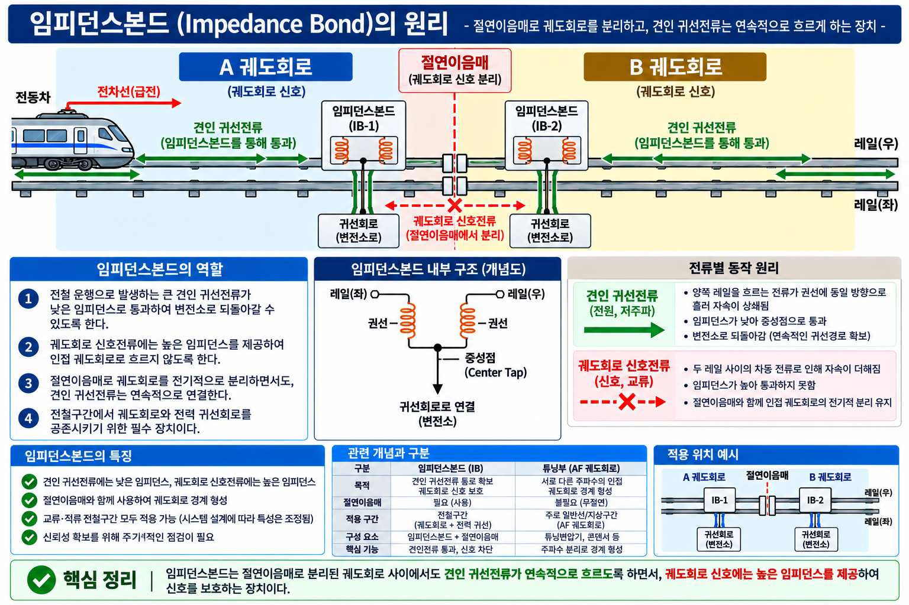

GATE5 · PART 09 · UNIT 09-04
귀선전류와 임피던스본드
전기철도·전력공급 | 출제빈도 ★★★ A등급
★★★ A등급
FINAL PUBLISH v1.0
§0 선행 용어
귀선전류 (Return Current)
전차선을 통해 열차에 공급된 후, 레일 등 귀선회로를 통해 변전소로 되돌아오는 전류.
귀선회로 (Return Circuit)
열차에서 사용된 전류가 변전소로 귀환하는 경로. 레일이 주 귀선 경로로 사용된다.
궤도회로 (Track Circuit)
레일을 이용하여 열차 위치를 검지하는 회로. 구간 경계에서 신호전류를 분리하여 운용한다.
임피던스본드 (Impedance Bond)
귀선전류는 통과시키고 궤도회로 신호전류는 분리(격리)하는 장치. 레일 이음매 부분에 설치된다.
§1 귀선전류
개념 95 (CROSS-REF)
귀선전류의 기본 귀환 경로
★★★
전차선을 통해 열차에 공급된 전류는 열차에서 사용된 후 레일 등 귀선회로를 통해 변전소로 귀환한다.
| 단계 | 경로 |
|---|---|
| 전력 공급 | 변전소 → 전차선 → 열차 |
| 귀선전류 | 열차 → 레일 등 귀선회로 → 변전소 |
💡 귀선전류는 공급 전류의 귀환 경로다. 레일이 주 귀선 경로로 사용된다.

▲ 귀선전류 흐름 — 변전소→전차선→열차(전력 공급) / 열차→레일 등 귀선회로→변전소(귀선전류)
§2 임피던스본드
개념 96
임피던스본드 역할
★★★
임피던스본드는 레일 이음매 부분에 설치되어 두 가지 역할을 동시에 수행한다.
| 측면 | 역할 | 대상 전류 |
|---|---|---|
| 전기 측 | 레일 이음매 귀선전류 연속 통과 | 귀선전류(견인전류) |
| 신호 측 | 궤도회로 경계 신호전류 분리(격리) | 궤도회로 신호전류 |
💡 핵심 암기 — 임피던스본드 = 귀선전류는 통과, 신호전류는 분리
두 기능을 동시에 수행하여 귀선회로와 궤도회로를 모두 정상 운용한다.
두 기능을 동시에 수행하여 귀선회로와 궤도회로를 모두 정상 운용한다.
⚠️ 함정 주의: "임피던스본드가 신호전류를 차단한다" → 표현 주의
핵심은 신호회로를 분리·격리하는 것이다. 단순 차단이 아님.
핵심은 신호회로를 분리·격리하는 것이다. 단순 차단이 아님.

▲ 임피던스본드 원리 — 귀선전류(견인전류) 통과 / 궤도회로 신호전류 분리(격리)
§3 귀선전류와 임피던스본드 관계
⚡ 전기 측 (귀선전류)
레일 이음매 부분에서
귀선전류(견인전류)를 연속 통과시킨다.
→ 귀선회로 단절 방지
귀선전류(견인전류)를 연속 통과시킨다.
→ 귀선회로 단절 방지
📡 신호 측 (신호전류)
궤도회로 경계에서
신호전류를 분리(격리)한다.
→ 인접 궤도회로 간 간섭 방지
신호전류를 분리(격리)한다.
→ 인접 궤도회로 간 간섭 방지
| 구분 | 역할 |
|---|---|
| 귀선전류 | 열차 사용 후 레일 등 귀선회로를 통해 변전소로 귀환 |
| 임피던스본드 전기 측 | 귀선전류 통과 |
| 임피던스본드 신호 측 | 궤도회로 신호전류 분리·격리 |
§4 시험 포인트 · 함정
🎯 시험 포인트
- 임피던스본드 = 귀선전류 통과 + 신호전류 분리(격리) — 두 기능 동시 수행
- 설치 위치: 레일 이음매 부분 (궤도회로 경계)
- 신호전류는 분리·격리 — "차단"으로 표현하지 않는다
- 귀선전류 기본 경로: 변전소 → 전차선 → 열차 → 레일 등 귀선회로 → 변전소
| 함정 표현 | 정오 | 올바른 내용 |
|---|---|---|
| "임피던스본드가 신호전류를 차단한다" | ⚠️ 표현 주의 | 분리(격리)하는 것. 단순 차단 아님 |
| "임피던스본드가 귀선전류를 차단한다" | ❌ 오답 | 귀선전류는 통과시킨다 |
| "임피던스본드가 신호전류도 통과시킨다" | ❌ 오답 | 신호전류는 분리(격리). 통과 대상은 귀선전류 |
⚠ 절대 혼동 금지
임피던스본드 통과 대상 = 귀선전류(견인전류)
임피던스본드 분리 대상 = 궤도회로 신호전류
임피던스본드 통과 대상 = 귀선전류(견인전류)
임피던스본드 분리 대상 = 궤도회로 신호전류
§5 SOURCE 예시
📝 SOURCE 예시 (4.html 개념96 quiz-ex)
Q. 임피던스본드가 통과시키는 것은?
정답: 귀선전류(견인전류)
오답함정: "신호전류도 통과시킨다"는 오답